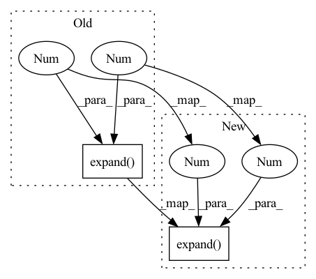

Pattern ID :3381
Before Change
def forward(self, x, transformer=None):
if transformer is not None and not transformer.is_identity:
mus = [m.unsqueeze(0).expand(x.size(0), -1, -1, -1) for m in self.mus]
sigmas = [s.unsqueeze(0).expand( x.size(0), -1 , -1, -1 ) for s in self.sigmas]
beta = transformer.predict_parameters(x)
sigmas = transformer.apply_parameters(x, sigmas, beta, is_var=True)[1]
x, mus = transformer.apply_parameters(x, mus, beta)After Change
def forward(self, x, transformer=None):
if transformer is not None and not transformer.is_identity:
mus = self.mus.unsqueeze(1).expand(-1, x.size(0), -1, -1, -1)
sigmas = self.sigmas.unsqueeze(1).expand(-1 , x.size(0), -1, -1 , -1)
beta = transformer.predict_parameters(x)
sigmas = transformer.apply_parameters(x, sigmas, beta, is_var=True)[1]
x, mus = transformer.apply_parameters(x, mus, beta)
sigmas = sigmas.permute(1, 0, 2, 3, 4)In pattern: SUPERPATTERN
Frequency: 4
Non-data size: 2
Instances Fragment ID: 17434378
Project Name: monniert/dti-clustering
Commit Name: 27e21a5a4c30488c074b02eb55b0cb5cf80b618f
Time: 2020-09-06
Author: tom.monnier@hotmail.fr
File Name: src/model/gmm.py
M Class Name: GaussianMixtureModel
N Class Name: GaussianMixtureModel
M Method Name: forward(3)
N Method Name: forward(3)
M Parent Class: nn.Module
N Parent Class: nn.Module
M File Name: src/model/gmm.py
N File Name: src/model/gmm.py
M Start Line: 50
M End Line: 51
N Start Line: 50
N End Line: 51
Before Change
batch, dim_head, mem_depth = lmem.shape[1], self.dim_head, self.num_memory_depth
if lmem.shape[2] == 0:
lmem = self.init_lmem.expand( mem_depth, batch, -1 , -1 )
// clone weights to avoid inplace error
w_q, w_kv, w_out, rezero_g = map(torch.clone, (self.to_q, self.to_kv, self.to_out, self.rezero_g))After Change
batch, dim_head, mem_depth = lmem.shape[1], self.dim_head, self.num_memory_depth
if lmem.shape[2] == 0:
lmem = self.init_lmem.expand( mem_depth, batch, -1 , -1 ) .clone()
// clone weights to avoid inplace error
Fragment ID: 17434376
Project Name: lucidrains/memory-transformer-xl
Commit Name: ac8692c07e7327c16cef521fbdbdeb7a8ed7c69a
Time: 2020-07-22
Author: lucidrains@gmail.com
File Name: memory_transformer_xl/memory_transformer_xl.py
M Class Name: MemoryAttentionNetwork
N Class Name: MemoryAttentionNetwork
M Method Name: forward(4)
N Method Name: forward(4)
M Parent Class: nn.Module
N Parent Class: nn.Module
M File Name: memory_transformer_xl/memory_transformer_xl.py
N File Name: memory_transformer_xl/memory_transformer_xl.py
M Start Line: 231
M End Line: 264
N Start Line: 236
N End Line: 267
Before Change
dx = self.l_relu(self.linear1(dx))
dx = torch.tanh(self.linear2(dx))
dx_norm = torch.reciprocal(torch.norm(dx, dim=1, keepdim=True).expand(-1 , 3 ) )
x = torch.mul(dx, dx_norm)
return x
After Change
dx = self.l_relu(self.linear1(dx))
dx = torch.tanh(self.linear2(dx))
dx_norm = torch.reciprocal(torch.norm(dx, dim=1, keepdim=True).expand(-1 , 3 ) + 1.0e-12)
x = torch.mul(dx, dx_norm)
return x
Fragment ID: 17434386
Project Name: astaka-pe/dual-dmp
Commit Name: e1c9b43d2c41c2bbc441685458713ed3bb9800db
Time: 2021-09-20
Author: astaka1119@g.ecc.u-tokyo.ac.jp
File Name: util/networks.py
M Class Name: NormalNet
N Class Name: NormalNet
M Method Name: forward(2)
N Method Name: forward(2)
M Parent Class: nn.Module
N Parent Class: nn.Module
M File Name: util/networks.py
N File Name: util/networks.py
M Start Line: 128
M End Line: 128
N Start Line: 134
N End Line: 134
Before Change
notes: LongTensor[batch, time]
x = self.emb(notes) // batch, time, emb_size
h, _ = self.rnn(x, self.h0[None].expand(1 , x.shape[0], -1 ) ) //batch, time, hidden_size
logits = self.proj(h[:,:-1]) // batch, time-1, 128
logits = F.log_softmax(logits, -1) // logits = logits - logits.logsumexp(-1, keepdim=True)
targets = notes[:,1:,None] //batch, time-1, 1After Change
notes: LongTensor[batch, time]
x = self.emb(notes) // batch, time, emb_size
h0 = self.h0[None].expand(1 , x.shape[0], -1 ) .contiguous() // 1 x batch x hidden_size
h, _ = self.rnn(x, h0) //batch, time, hidden_size
logits = self.proj(h[:,:-1]) // batch, time-1, 128
logits = F.log_softmax(logits, -1) // logits = logits - logits.logsumexp(-1, keepdim=True) Fragment ID: 17434374
Project Name: intelligent-instruments-lab/iil-python-tools
Commit Name: d2354c1ab3771fda885583859cbfe6fec08b064d
Time: 2022-02-22
Author: victor.shepardson@gmail.com
File Name: notepredictor/notepredictor/model.py
M Class Name: PitchPredictor
N Class Name: PitchPredictor
M Method Name: forward(2)
N Method Name: forward(2)
M Parent Class: nn.Module
N Parent Class: nn.Module
M File Name: notepredictor/notepredictor/model.py
N File Name: notepredictor/notepredictor/model.py
M Start Line: 38
M End Line: 39
N Start Line: 38
N End Line: 40